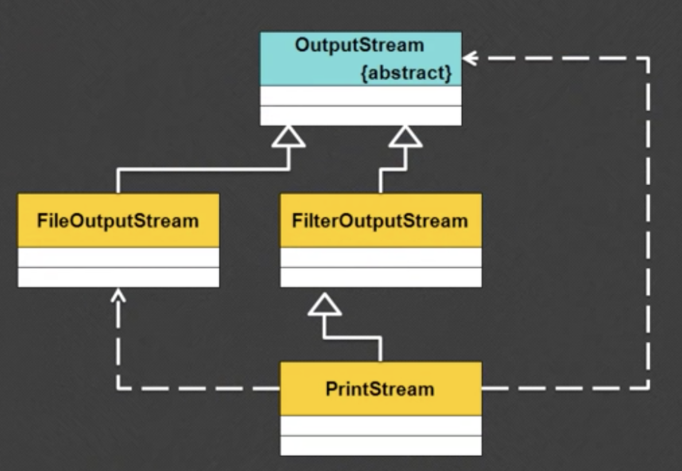

<!DOCTYPE html><html lang="zh-CN"><head><meta charset="utf-8"><meta http-equiv="X-UA-Compatible" content="IE=edge"><meta name="viewport" content="width=device-width, initial-scale=1"><meta name="author" content="JiaojiaoFu"><link rel="alternative" href="/atom.xml" title="姣姣的个人主页" type="application/atom+xml"><link rel="icon" href="/favicon.png"><title>Chapter 52 打印流 - 姣姣的个人主页</title><link rel="stylesheet" href="/css/main.css" type="text/css">
<link rel="stylesheet" href="/js/fancybox/jquery.fancybox.min.css" type="text/css">
<!--[if lt IE 9]><script>(function(a,b){a="abbr article aside audio bdi canvas data datalist details dialog figcaption figure footer header hgroup main mark meter nav output progress section summary template time video".split(" ");for(b=a.length-1;b>=0;b--)document.createElement(a[b])})()</script><![endif]--><script src="/js/jquery-3.1.1.min.js" type="text/javascript"></script>
<script src="/js/fancybox/jquery.fancybox.min.js" type="text/javascript"></script>
</head><body style="opacity:0"><header class="head"><h1 class="head-title u-fl"><a href="/">姣姣的个人主页</a></h1><nav class="head-nav u-fr"><ul class="head-nav__list"><li class="head-nav__item"><a class="head-nav__link" href="/archives">カタログ/（目录）</a></li></ul></nav></header><main class="main"><article class="post"><header class="post__head"> <time class="post__time" datetime="2018-10-23T16:00:00.000Z">October 24, 2018</time><h1 class="post__title"><a href="/2018/10/24/Java_52_打印流/">Chapter 52 打印流</a></h1><div class="post__main echo"><p>使用打印流支持各种数据类型的输出<br><a id="more"></a></p>
<h3 id="打印流">打印流</h3>
<h4 id="1-_问题引出">1. 问题引出</h4>
<p>OutputStream 输出 String 类需要将 String 类变为 字节数据（getBytes），int、double 类型都需要转换成 String 然后再变为字节数据。<br><strong>示例</strong>：创建一个类，支持各种数据类型的输出</p>
<figure class="highlight java"><table><tr><td class="gutter"><pre><div class="line">1</div><div class="line">2</div><div class="line">3</div><div class="line">4</div><div class="line">5</div><div class="line">6</div><div class="line">7</div><div class="line">8</div><div class="line">9</div><div class="line">10</div><div class="line">11</div><div class="line">12</div><div class="line">13</div><div class="line">14</div><div class="line">15</div><div class="line">16</div><div class="line">17</div><div class="line">18</div><div class="line">19</div><div class="line">20</div><div class="line">21</div><div class="line">22</div><div class="line">23</div><div class="line">24</div><div class="line">25</div><div class="line">26</div><div class="line">27</div><div class="line">28</div><div class="line">29</div><div class="line">30</div><div class="line">31</div><div class="line">32</div><div class="line">33</div><div class="line">34</div><div class="line">35</div><div class="line">36</div><div class="line">37</div><div class="line">38</div><div class="line">39</div><div class="line">40</div><div class="line">41</div><div class="line">42</div></pre></td><td class="code"><pre><div class="line"><span class="keyword">package</span> com.company;</div><div class="line"><span class="keyword">import</span> java.io.*;</div><div class="line">class PrintUtil{</div><div class="line">    <span class="keyword">private</span> OutputStream output;</div><div class="line">    <span class="keyword">public</span> <span class="title">PrintUtil</span>(OutputStream output){</div><div class="line">        <span class="keyword">this</span>.output = output;</div><div class="line">    }</div><div class="line">    <span class="keyword">public</span> <span class="keyword">void</span> <span class="title">print</span>(<span class="keyword">int</span> x){</div><div class="line">        <span class="keyword">this</span>.print(String.valueOf(x));</div><div class="line">    }</div><div class="line">    <span class="keyword">public</span> <span class="keyword">void</span> <span class="title">print</span>(String x){</div><div class="line">        <span class="keyword">try</span> {</div><div class="line">            <span class="keyword">this</span>.output.write(x.getBytes());</div><div class="line">        } <span class="keyword">catch</span> (IOException e) {</div><div class="line">            e.printStackTrace();</div><div class="line">        }</div><div class="line">    }</div><div class="line">    <span class="keyword">public</span> <span class="keyword">void</span> <span class="title">print</span>(<span class="keyword">double</span> x){</div><div class="line">        <span class="keyword">this</span>.print(String.valueOf(x));</div><div class="line">    }</div><div class="line">    <span class="keyword">public</span> <span class="keyword">void</span> <span class="title">println</span>(<span class="keyword">int</span> x){</div><div class="line">        <span class="keyword">this</span>.println(String.valueOf(x));</div><div class="line">    }</div><div class="line">    <span class="keyword">public</span> <span class="keyword">void</span> <span class="title">println</span>(String x){</div><div class="line">        <span class="keyword">this</span>.print(x.concat(<span class="string">"\n"</span>));</div><div class="line">    }</div><div class="line">    <span class="keyword">public</span> <span class="keyword">void</span> <span class="title">println</span>(<span class="keyword">double</span> x){</div><div class="line">        <span class="keyword">this</span>.println(String.valueOf(x));</div><div class="line">    }</div><div class="line">}</div><div class="line"><span class="keyword">public</span> <span class="class"><span class="keyword">class</span> <span class="title">TestDemo</span> </span>{</div><div class="line">    <span class="keyword">public</span> <span class="keyword">static</span> <span class="keyword">void</span> <span class="title">main</span>(String[] agrs) <span class="keyword">throws</span> Exception { <span class="comment">// 处理异常</span></div><div class="line">        PrintUtil pu = <span class="keyword">new</span> PrintUtil(<span class="keyword">new</span> FileOutputStream(<span class="string">"."</span> + File.separator + <span class="string">"testA.txt"</span>));</div><div class="line">        pu.print(<span class="number">5</span>);</div><div class="line">        pu.print(<span class="number">5.5</span>);</div><div class="line">        pu.print(<span class="string">"Hello"</span>);</div><div class="line">        pu.println(<span class="string">""</span>);</div><div class="line">        pu.println(<span class="number">5</span>);</div><div class="line">        pu.println(<span class="number">5.5</span>);</div><div class="line">        pu.println(<span class="string">"Hello"</span>);</div><div class="line">   }</div><div class="line">}</div></pre></td></tr></table></figure>

<h4 id="2-_打印流">2. 打印流</h4>
<p>为了解决输出数据时功能不足，java.io 提供了一套用于数据输出的类：PrintStream（打印字节流），PrintWriter（打印字符流）。<br>这两个类除类名称不一样，方法是一样的，以 PrintStream 类为例，观察一下这个类的继承与构造方法：</p>
<figure class="highlight java"><table><tr><td class="gutter"><pre><div class="line">1</div><div class="line">2</div><div class="line">3</div><div class="line">4</div></pre></td><td class="code"><pre><div class="line">java.lang.Object</div><div class="line">    |- java.io.OutputStream</div><div class="line">        |- java.io.FilterOutputStream</div><div class="line">            |- java.io.PrintStream</div></pre></td></tr></table></figure>

<p>构造方法：<code>public PrintStream(OutputStream out)</code></p>
<p></p>
<p>在 PrintStream 类中，提供了一系列 print() 和 println() 方法，这些方法支持各种数据类型的输出，如果使用 PrintStream 就不需要使用 write() 方法。但本质依然是根据 OutputStream 类的方法完成的。<br>这种设计模式成为<em>装饰设计</em>模式，相当于将一个功能不足的操作类，通过某些类的装饰，形成更好用的工具类。<br><strong>示例</strong>：使用 PrintStream</p>
<figure class="highlight java"><table><tr><td class="gutter"><pre><div class="line">1</div><div class="line">2</div><div class="line">3</div><div class="line">4</div><div class="line">5</div><div class="line">6</div><div class="line">7</div><div class="line">8</div><div class="line">9</div><div class="line">10</div><div class="line">11</div><div class="line">12</div><div class="line">13</div><div class="line">14</div></pre></td><td class="code"><pre><div class="line"><span class="keyword">package</span> com.company;</div><div class="line"><span class="keyword">import</span> java.io.*;</div><div class="line"><span class="keyword">public</span> <span class="class"><span class="keyword">class</span> <span class="title">TestDemo</span> </span>{</div><div class="line">    <span class="keyword">public</span> <span class="keyword">static</span> <span class="keyword">void</span> <span class="title">main</span>(String[] agrs) <span class="keyword">throws</span> Exception { <span class="comment">// 处理异常</span></div><div class="line">        PrintStream pu = <span class="keyword">new</span> PrintStream(<span class="keyword">new</span> FileOutputStream(<span class="string">"."</span> + File.separator + <span class="string">"testA.txt"</span>));</div><div class="line">        pu.print(<span class="number">5</span>);</div><div class="line">        pu.print(<span class="number">5.5</span>);</div><div class="line">        pu.print(<span class="string">"Hello"</span>);</div><div class="line">        pu.println(<span class="string">""</span>);</div><div class="line">        pu.println(<span class="number">5</span>+<span class="number">2</span>);</div><div class="line">        pu.println(<span class="number">5.5</span>+<span class="number">1.33</span>);</div><div class="line">        pu.println(<span class="string">"Hello"</span>);</div><div class="line">   }</div><div class="line">}</div></pre></td></tr></table></figure>

<p>在以后的开发过程中，只要是程序输出内容，都采用打印流的模式，但要记住，打印流需要 OutputStream 类支持的。</p>
<h4 id="3-_JDK_1-5_改进">3. JDK 1.5 改进</h4>
<ol>
<li><p>所有的输出数据都要求使用打印流输出，JDK 1.5 增加了新的输出：格式化输出：<br><code>public PrintStream printf(String format,Object... args)</code><br>如果需要格式化输出就需要一些标记：整数（%d），字符串（%s），字符（%c），小数（%m.nf）</p>
<p> <strong>示例</strong>：格式化输出【了解】</p>
</li>
</ol>
<figure class="highlight java"><table><tr><td class="gutter"><pre><div class="line">1</div><div class="line">2</div><div class="line">3</div><div class="line">4</div><div class="line">5</div><div class="line">6</div><div class="line">7</div><div class="line">8</div><div class="line">9</div><div class="line">10</div><div class="line">11</div></pre></td><td class="code"><pre><div class="line"><span class="keyword">package</span> com.company;</div><div class="line"><span class="keyword">import</span> java.io.*;</div><div class="line"><span class="keyword">public</span> <span class="class"><span class="keyword">class</span> <span class="title">TestDemo</span> </span>{</div><div class="line">    <span class="keyword">public</span> <span class="keyword">static</span> <span class="keyword">void</span> <span class="title">main</span>(String[] agrs) <span class="keyword">throws</span> Exception { <span class="comment">// 处理异常</span></div><div class="line">        String name = <span class="string">"Mary"</span>;</div><div class="line">        <span class="keyword">int</span> age = <span class="number">18</span>;</div><div class="line">        <span class="keyword">double</span> score = <span class="number">59.89</span>;</div><div class="line">        PrintStream pu = <span class="keyword">new</span> PrintStream(<span class="keyword">new</span> FileOutputStream(<span class="string">"."</span> + File.separator + <span class="string">"testA.txt"</span>));</div><div class="line">        pu.printf(<span class="string">"姓名：%s \n年龄：%d\n成绩：%.2f"</span>,name,age,score);</div><div class="line">   }</div><div class="line">}</div></pre></td></tr></table></figure>

<ol start="2">
<li>JDK 1.5 之后 String 的改进<br>String 定义了一个新的功能：格式化字符串<br><code>public static String format(String format,Object... args)</code><br><strong>示例</strong>：格式化字符串</li>
</ol>
<figure class="highlight java"><table><tr><td class="gutter"><pre><div class="line">1</div><div class="line">2</div><div class="line">3</div><div class="line">4</div><div class="line">5</div><div class="line">6</div><div class="line">7</div><div class="line">8</div><div class="line">9</div><div class="line">10</div><div class="line">11</div></pre></td><td class="code"><pre><div class="line"><span class="keyword">package</span> com.company;</div><div class="line"></div><div class="line"><span class="keyword">public</span> <span class="class"><span class="keyword">class</span> <span class="title">TestDemo</span> </span>{</div><div class="line">    <span class="keyword">public</span> <span class="keyword">static</span> <span class="keyword">void</span> <span class="title">main</span>(String[] agrs) <span class="keyword">throws</span> Exception { <span class="comment">// 处理异常</span></div><div class="line">        String name = <span class="string">"Mary"</span>;</div><div class="line">        <span class="keyword">int</span> age = <span class="number">18</span>;</div><div class="line">        <span class="keyword">double</span> score = <span class="number">59.89</span>;</div><div class="line">        String str = String.format(<span class="string">"姓名：%s \n年龄：%d\n成绩：%.2f"</span>,name,age,score);</div><div class="line">        System.out.printf(str);</div><div class="line">   }</div><div class="line">}</div></pre></td></tr></table></figure>

<p>String 类的核心功能讲解完成啦。</p>
</div></header><footer class="post__foot u-cf"><ul class="post__tag u-fl"><li class="post__tag__item"><a class="post__tag__link" href="/tags/Java/">Java</a></li></ul></footer></article><div class="comments" id="lv-container" data-id="city" data-uid="your uid"><script>(function(d, s) {var j, e = d.getElementsByTagName(s)[0];if (typeof LivereTower === 'function') { return; } j = d.createElement(s);j.src = 'https://cdn-city.livere.com/js/embed.dist.js';j.async = true;e.parentNode.insertBefore(j, e);})(document, 'script');</script></div></main><footer class="foot"><div class="foot-copy">&copy; 2016-2018 JiaojiaoFu</div></footer><script src="/js/scroller.js" type="text/javascript"></script>
<script src="/js/main.js" type="text/javascript"></script>
</body></html>